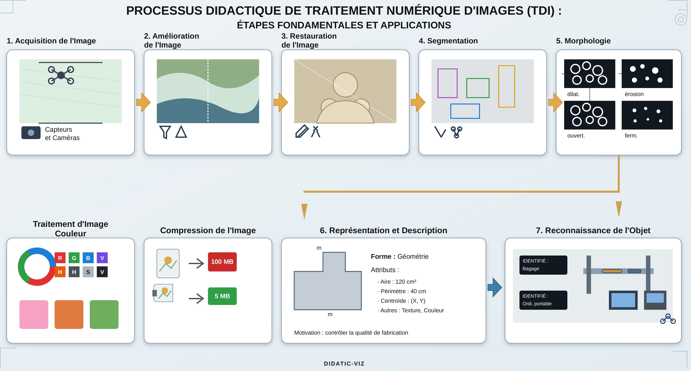
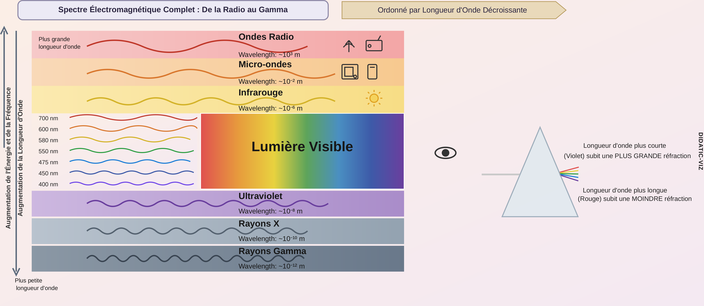
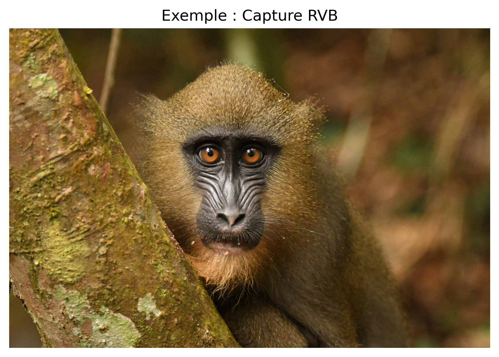
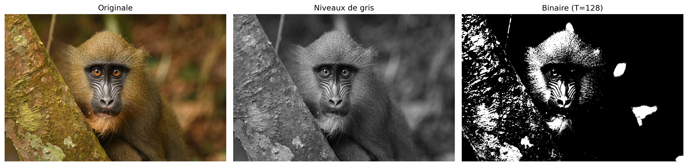
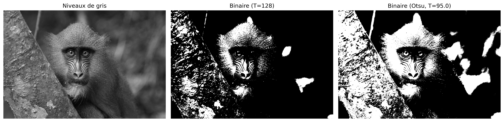
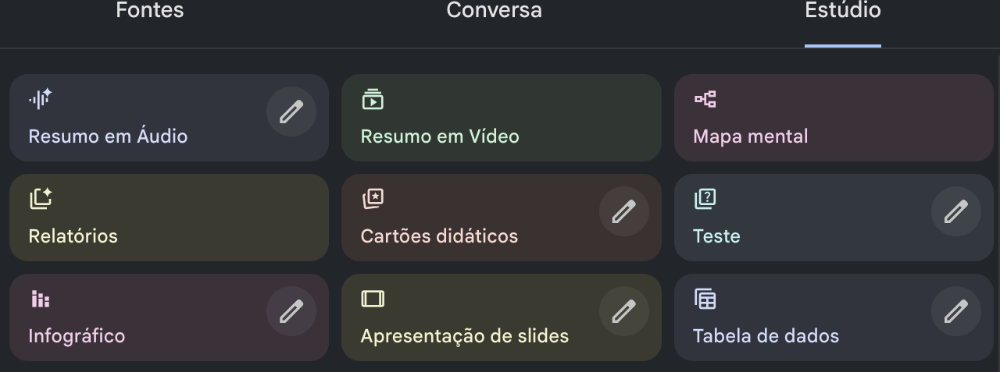

Ce chapitre inaugure la Partie 1 de l’ouvrage, consacrée aux fondements du Traitement Numérique des Images (TNI). Y sont présentés la représentation mathématique des images numériques et les principales méthodes pour leur manipulation, en utilisant le langage Python et la bibliothèque morph.py (ZAMPIROLLI, 2025).
1.1 Objectifs
À la fin de ce chapitre, vous serez capable de :
Comprendre la nature physique et mathématique de l’image numérique \(f(x,y)\).
Identifier les bandes du spectre électromagnétique pertinentes pour le traitement d’images numériques (TIN).
Configurer l’environnement de développement en Python.
Effectuer les opérations de base : lecture, affichage et enregistrement d’images.
Manipuler les structures de matrices (NumPy) sans tomber dans les pièges liés à la mémoire.
Accéder aux intensités des pixels et les modifier individuellement.
Appliquer un seuillage manuel.
1.2 Avant de commencer : Notebooks en Python
Ce matériel a été construit selon le concept de Literate Programming (Programmation lettrée), imaginé par Donald Knuth dans les années 1980 (KNUTH, 1984). Knuth — également créateur du système TeX pour la typographie numérique — a proposé que les programmes soient écrits comme un récit logique destiné aux êtres humains, entrelaçant code et documentation.
Pour exécuter une cellule, appuyez sur Shift + Entrée ou cliquez sur le bouton ▶️.
NoteNote sur le format
Dans les versions rendues (PDF ou HTML), le code est présenté dans des blocs statiques à des fins de lecture et de référence. L’exécution interactive nécessite l’accès via Google Colab (disponible en haut de la page) ou dans un environnement local via VSCode ou Jupyter Notebook.
1.3 Fondements
L’étude des systèmes basés sur l’image englobe un écosystème de disciplines intégrées qui transforment des données visuelles brutes en connaissances structurées. Tandis que certains domaines se concentrent sur la génération de représentations, d’autres se consacrent au traitement et à l’analyse de ces données pour soutenir des applications technologiques complexes.
Le diagramme présenté dans le Figure 1.1 établit la distinction et la complémentarité entre le Traitement Numérique des Images (TNI) et la Vision par Ordinateur (VO). Le TNI, mis en évidence en vert, se concentre sur la transformation d’image en image, visant l’amélioration de la qualité ou le prétraitement, comme la suppression du bruit et le rehaussement du contraste.
En revanche, la VO, signalée en bleu, se focalise sur l’interprétation du contenu visuel pour extraire des modèles ou des informations, tels que la reconnaissance d’objets et de gestes. La région d’intersection illustre la synergie entre les domaines, où le TNI prépare les données visuelles pour l’interprétation par la VO. La carte démontre également les interconnexions des deux disciplines avec des domaines tels que la Robotique, l’Infographie, l’Intelligence Artificielle (IA) et les Neurosciences.
Figure 1.1: Diagramme relationnel détaillant les distinctions fondamentales, les synergies et les interconnexions entre le TNI et la VO dans le contexte des systèmes basés sur l’image.
1.3.1 👁️ Vision par ordinateur
Focus :Image → Modèle (chemin inverse de l’infographie).
Objectif : Extraire des informations de haut niveau à partir d’images ou de vidéos.
Applications typiques :
Robotique – détection d’obstacles, localisation et navigation autonome.
Surveillance et inspection – reconnaissance d’événements, lecture de plaques, contrôle qualité.
Imagerie médicale – détection de tumeurs, segmentation d’organes, aide au diagnostic.
Interaction homme-machine – reconnaissance de gestes, expressions faciales, suivi oculaire.
Relation avec d’autres domaines : utilise des techniques d’apprentissage automatique et d’IA pour classer et interpréter les scènes ; sert d’« yeux » à la robotique.
1.3.2 🖼️ Traitement Numérique des Images (TNI)
Focus :Image → Image (généralement — transformation d’une image en une autre).
Objectif : Améliorer la qualité visuelle ou extraire des caractéristiques de bas niveau.
Applications courantes :
Élimination du bruit (filtres moyenne, médiane, gaussien).
Amélioration du contraste (égalisation d’histogramme, ajustement gamma).
Détection des contours (Sobel, Canny, Laplacien).
Segmentation (seuillage, croissance de régions, watershed).
Transformations géométriques (redimensionnement, rotation, correction de perspective).
Relation avec d’autres domaines (voir Table 1.1) :
C’est la base de la plupart des systèmes de VC (prétraitement).
L’infographie applique souvent le TNI pour le post-traitement (ex. : lissage, rehaussement).
Les techniques d’IA peuvent optimiser les paramètres de traitement (ex. : apprentissage de filtres).
Table 1.1: Connexion entre le PDI, la VC et d’autres domaines scientifiques.
Domaine
Relation avec le PDI et la VC
Intelligence artificielle
Fournit des modèles (réseaux de neurones, SVM) qui interprètent les sorties de la VC.
Robotique
Consomme des données de la VC pour prendre des décisions (navigation, manipulation).
Apprentissage automatique
Utilise des descripteurs extraits par le PDI/VC pour entraîner des classifieurs.
Infographie
Chemin inverse : modèle → image ; applique souvent le PDI pour un rendu réaliste.
Neuroscience
Inspire des modèles de PDI (ex. : filtres similaires aux cellules ganglionnaires de la rétine).
1.4 Étapes du PDI
Les étapes du PDI sont présentées dans la Figure 1.2 et peuvent être comprises comme une chaîne de transformations qui réduit la redondance des données afin d’en extraire du sens :
Niveau bas : agit directement sur les pixels de l’image bruitée pour effectuer des améliorations et des filtrages, en produisant en sortie une image propre ou rehaussée.
Niveau moyen : reçoit l’image traitée, effectue la segmentation et la description, transformant la matrice de pixels en attributs structurés (forme, taille et texture).
Niveau haut : utilise la table d’attributs pour alimenter des processus logiques et d’intelligence artificielle, aboutissant à la décision ou à la reconnaissance finale (comme le diagnostic médical).
Figure 1.2: Représentation du flux séquentiel de traitement : la sortie de chaque niveau devient l’entrée du niveau suivant.
A Figure 1.3 détaille la séquence complète du PDI, depuis la capture jusqu’à l’interprétation. Le flux commence à l’acquisition de l’image (1) et se poursuit avec l’amélioration (2) et la restauration (3). Ensuite, le contenu est isolé par la segmentation (4) et affiné par la morphologie (5). La transition cruciale se produit à la représentation et à la description (6), où les objets visuels sont convertis en données mathématiques (aire, périmètre, etc.), permettant la reconnaissance (7). Les processus auxiliaires incluent le traitement d’image couleur et la compression, qui contribuent à l’efficacité du stockage et de l’analyse.

Figure 1.3: Flux détaillé du PDI : de l’acquisition sensorielle à l’extraction d’attributs et à la reconnaissance automatisée, incluant le traitement couleur et la compression.
1.5 Formation de l’image et le spectre
Le processus de formation d’une image repose sur l’interaction entre la matière et l’énergie rayonnante. Essentiellement, une image est conçue lorsqu’un capteur enregistre le rayonnement issu de l’interaction avec un objet physique. Dans le contexte de la vision humaine et de la photographie conventionnelle, ce phénomène dépend d’une source de lumière qui éclaire la scène ; les caractéristiques des objets sont alors codées par le biais des variations d’intensité et de couleur de la lumière qui atteint le capteur, comme illustré dans la Figure 1.4.

Figure 1.4: Représentation du spectre visible et de sa position par rapport aux autres rayonnements électromagnétiques, mettant en évidence la variation des longueurs d’onde de 380 nm à 750 nm.
La lumière visible n’occupe qu’une petite bande du spectre électromagnétique — entre 380 nm (violet) et 750 nm (rouge) — comme illustré dans la Figure 1.5. Les capteurs numériques classiques opèrent dans cette même fenêtre, mais des équipements spécialisés peuvent capter des rayonnements invisibles à l’œil humain, tels que l’infrarouge et les rayons X. En PDI, l’image formée dépend directement de la sensibilité spectrale du capteur utilisé.
Figure 1.5: (A) Spectre électromagnétique complet en échelle logarithmique, avec mise en évidence de la bande visible. (B) Détail de la lumière visible (380-750 nm) et de ses couleurs. (C) Décomposition de la lumière blanche par le prisme : la longueur d’onde la plus courte subit une réfraction plus grande, séparant UV, visible et infrarouge.
À partir de ce processus physique d’acquisition, il devient possible de modéliser mathématiquement l’image numérique comme une fonction bidimensionnelle discrète, dans laquelle chaque point de la scène est représenté par des échantillons numériques d’intensité lumineuse, formalisant ainsi les concepts de pixel et d’image numérique présentés dans la section suivante.
1.6 Qu’est-ce qu’une image numérique ?
Une image numérique est constituée d’une grille de pixels (Picture Elements), où chaque pixel est la plus petite unité élémentaire de l’image.
AstuceQu’est-ce qu’un pixel ?
Un pixel est la plus petite unité adressable qui compose une image numérique. Chaque pixel occupe une position unique dans la grille et stocke une ou plusieurs valeurs numériques qui représentent son intensité ou sa couleur.
Représentation mathématique
Contrairement à une fonction continue, le domaine d’une image numérique est un plan rectangulaire fini \(\mathbb{E} \subset \mathbb{Z}^2\), qui représente la grille d’échantillonnage. Ce domaine est indexé par des coordonnées entières :
\[
\mathbb{E} = \{ (x, y) \in \mathbb{Z}^2 \mid 0 \le x < L,\; 0 \le y < H \}
\tag{1.1}\]
Où :
\(L\) : représente la largeur de l’image (nombre de colonnes).
\(H\) : représente la hauteur de l’image (nombre de lignes).
L’image numérique est une fonction qui associe à chaque paire de coordonnées \((x,y)\) une ou plusieurs valeurs décrivant l’apparence du pixel.
\[
f: \mathbb{E} \to \mathcal{V}
\tag{1.2}\]
L’ensemble \(\mathcal{V}\) définit les valeurs possibles pour le pixel (codomaine), variant selon le type d’image, comme illustré dans la Table 1.2.
Table 1.2: Principaux types d’image numérique et leurs ensembles respectifs de valeurs possibles pour chaque pixel.
Type d’image
\(\mathcal{V}\) (valeurs du pixel)
Représentation
Binaire
\(\{0, 1\}\) ou \(\{0, 255\}\)
⬛◻️
Niveaux de gris
\(\{0, 1, \dots, 255\}\)
░▒▓█
Couleur (RVB)
\(\{0, \dots, 255\}^3\) (triplets ordonnés de valeurs)
🟥🟩🟦
Exemple pratique : Une image couleur dans le modèle RVB peut être représentée mathématiquement par une fonction qui associe trois valeurs d’intensité à chaque pixel. Informatiquement, cette représentation correspond à trois matrices superposées — les canaux rouge (Red), vert (Green) et bleu (Blue) — dans lesquelles chaque élément stocke l’intensité lumineuse du canal respectif à une position donnée de l’image.
Pour rendre possibles les expériences pratiques de PDI et de VC, ce livre utilise l’écosystème scientifique de Python, en intégrant des bibliothèques dédiées à la manipulation matricielle, au traitement d’images et à la visualisation des résultats, présentées ci-dessous.
1.7 Configuration de l’environnement
Ce matériel utilise l’écosystème scientifique de Python, avec un accent particulier sur NumPy (calcul matriciel), OpenCV (vision par ordinateur) et la bibliothèque morph.py (ZAMPIROLLI, 2025), développée à des fins pédagogiques et utilisée tout au long de ce livre, comme présenté dans la Table 1.3.
Le projet est actuellement disponible en Python et en portugais. Son organisation permet toutefois son extension à d’autres langages de programmation et à d’autres langues.
Les Exercices de Programmation (EP) présentés à la fin des chapitres peuvent être validés par le module testsuite.py, qui permet d’exécuter des cas de test dans différents langages, notamment Python, C, C++, Java, JavaScript et R. Ainsi, les mêmes cas de test peuvent être utilisés pour vérifier les solutions développées dans les notebooks et dans Moodle/VPL.
Table 1.3: Principales bibliothèques et modules utilisés tout au long de ce livre pour le calcul matriciel, le TNI, la VC, la visualisation et la validation des exercices.
Bibliothèque
Fonction principale
numpy
Représentation matricielle et opérations numériques
opencv-python
Lecture, écriture et opérations de vision par ordinateur
matplotlib
Visualisation d’images et de graphiques
morph.py
Abstraction didactique des opérations de TNI
testsuite.py
Exécution et validation automatique des EP
1.8 Versions de morph.py
La bibliothèque morph.py possède deux versions publiques :
Version 1.0 — version originale, publiée avec l’article présenté à EduComp 2024 : dépôt de la version 1.0
La version 1.1 a été adaptée pour répondre également aux contraintes de mémoire du Moodle/VPL (Laboratoire Virtuel de Programmation). Dans la version 1.0, certaines bibliothèques, comme matplotlib, requests et skimage, étaient chargées au moment du import morph. Dans des environnements aux ressources limitées, ce chargement pouvait dépasser la limite de mémoire et produire des erreurs comme Jail: out of memory, 128MiB.
Dans la version 1.1, ces imports ont été remplacés par un chargement lazy : chaque bibliothèque n’est importée que par la méthode qui l’utilise effectivement. Ainsi, la commande import morph maintient un chargement initial réduit, utilisant principalement numpy et cv2, tandis que les ressources supplémentaires sont chargées à la demande.
La configuration des notebooks est centralisée dans le fichier config.py, disponible dans le même dépôt. Ce fichier vérifie les dépendances, cherche à garantir l’utilisation d’OpenCV 5.0 et met à disposition morph.py et, si nécessaire, testsuite.py. Lorsque l’environnement ne dispose pas de la version adéquate d’OpenCV, config.py peut réinstaller la version requise et, si nécessaire, demander le redémarrage de l’environnement d’exécution.
Ainsi, les notebooks utilisent une routine de configuration unique, réduisant la répétition de code et facilitant la reproduction de l’environnement informatique utilisé dans ce livre.
1.9 Fondements des matrices — attention à la copie de références
Comme une image numérique peut être représentée par une matrice, il est important de comprendre comment créer et manipuler correctement les matrices. En Python, il existe un piège courant lors de l’utilisation de l’opérateur * avec des listes :
AvertissementAttention à la copie de références
Lors de l’exécution de m = [[0]*2]*3, trois lignes indépendantes ne sont pas créées. À la place, trois références vers la même liste sont créées. Par conséquent, la modification d’un élément dans l’une des lignes modifiera également l’élément correspondant dans les autres lignes.
Pour visualiser ce comportement, on peut exécuter le code sur Python Tutor et le comparer avec la méthode correcte de création d’une matrice à l’aide de listes : m = [[0]*2 for _ in range(3)].
En pratique, pour le traitement numérique des images (TNI), il est recommandé d’utiliser NumPy, qui fournit des structures de données multidimensionnelles efficaces et des opérations vectorisées adaptées à la manipulation d’images. Le code suivant présente différentes méthodes de création d’images synthétiques, dont les résultats sont affichés dans la Figure 1.6.
import numpy as np# Création d'une image noire (zéros) de 4, 6 pixelsimg_preta = np.zeros((4, 6), dtype='uint8')img_preta[0,0] =255# pixel blanc en haut à gauche# Création d'une image blanche (255) de 4, 6 pixelsimg_branca = np.ones((4, 6), dtype='uint8') *255img_branca[3,5] =0# pixel noir en bas à droite# Création d'une image aléatoire pour les tests (bruit)img_random = mm.randomImage(4, 6, maxValue=255)print("Matrice aléatoire générée :")print(mm.drawImg(img_random))mm.show( [img_preta, img_branca, img_random], titles=["Principalement noire\n(avec 1 pixel blanc en (0,0))","Principalement blanche\n(avec 1 pixel noir en (3,5))","Image aléatoire\n(simulation de bruit)" ], cols=3, figsize=(9, 3), axis=True)
Dans des bibliothèques telles que NumPy, OpenCV et scikit-image, les images numériques sont souvent représentées informatiquement sous forme de tableaux NumPy. Ainsi, les opérations matricielles et les concepts d’algèbre linéaire peuvent être appliqués directement au traitement d’images.
L’une des opérations fondamentales en traitement d’images est la lecture d’images. Dans la bibliothèque morph.py, la fonction mm.read() permet de charger des images à partir de fichiers locaux ou d’URL, comme illustré dans la Figure 2.7..
Dimensions (H, W, Canaux) : (1365, 2048, 3)
Type de données : uint8

Figure 1.7: Mandrill (Mandrillus sphinx) en milieu naturel. Crédit : Julien Renoult (CC BY 4.0).
Alternative : Téléchargement de l’image vers un stockage local
Dans les environnements où la lecture directe d’URL est indisponible — en raison de restrictions réseau, de politiques de pare-feu ou d’absence de connectivité — une alternative consiste à effectuer au préalable le téléchargement de l’image vers le système de fichiers local. Après le stockage, l’image peut être chargée normalement via la fonction mm.read(). Dans l’exemple suivant, le fichier est enregistré localement sous le nom mandrill.png.
wget -O mandrill.png <URL> effectue le téléchargement de l’image et la stocke localement sous le nom spécifié ;
mm.read('mandrill.png') lit le fichier directement depuis le système de fichiers, sans nécessiter de requêtes HTTP supplémentaires ;
cette stratégie réduit la dépendance à la connectivité pendant l’exécution des expériences et évite les téléchargements répétés de la même image.
AstuceRemarque
Le préfixe ! est utilisé dans les environnements basés sur les carnets (notebooks), comme Jupyter Notebook, JupyterLab et Google Colab, pour exécuter des commandes du système d’exploitation directement dans des cellules de code. Dans les terminaux classiques, la commande doit être utilisée sans le préfixe !.
Si l’utilitaire wget n’est pas installé, on peut utiliser en alternative :
Comme nous l’avons vu, une image couleur dans l’espace RVB est représentée par la fonction :
\[
f: \mathbb{E} \to \{0,1,\dots,255\}^3
\]
C’est-à-dire que pour chaque pixel \((x,y)\), nous avons trois valeurs \((R,V,B)\) qui définissent sa couleur.
Conversion en Niveaux de Gris
Pour convertir une image RVB en niveaux de gris (grayscale), il est nécessaire de combiner les trois canaux en une seule valeur d’intensité \(g\), qui représente la luminosité perçue. Comme l’œil humain n’est pas également sensible au rouge, au vert et au bleu, on utilise une moyenne pondérée. La norme ITU-R BT.601 ({ITU-R}, 2011) définit les poids suivants :
\[
g = 0.299\,R + 0.587\,G + 0.114\,B
\tag{1.3}\]
Après le calcul, la valeur \(g\) est arrondie à l’entier le plus proche et ajustée à l’intervalle \([0, 255]\). Le résultat est une nouvelle image, désormais en niveaux de gris, représentée par :
À partir de l’image en niveaux de gris \(f_{\text{gris}}(x,y)\), une opération fondamentale est le seuillage, qui produit une image binaire (uniquement noir et blanc). Pour cela, on choisit une valeur de coupure \(T\) (généralement dans l’intervalle \([0,255]\)) et on définit :
Exemple : Avec \(T = 128\), les pixels dont l’intensité est supérieure à 128 deviennent blancs (255) ; les autres deviennent noirs (0).
Le seuillage est largement utilisé pour segmenter les objets du fond, extraire les contours ou créer des masques binaires pour un traitement ultérieur.
Remarque : La valeur 255 représente le blanc maximal dans les images 8 bits, tandis que 0 représente le noir absolu.
Exemple pratique de conversion et de seuillage
La Figure 1.8 illustre les principales étapes pour transformer une image couleur en niveaux de gris, puis la convertir en image binaire par seuillage. Le code suivant implémente ces étapes :
# 1. Convertir en niveaux de grisimg_gray = mm.gray(img)# 2. Appliquer un seuil (Pixels > 128 deviennent 255, autres 0)limiar =128img_binaria = mm.threshold(img_gray, limiar)# Utilisation de la nouvelle fonctionmm.show( [img, img_gray, img_binaria], titles=["Originale", "Niveaux de gris", f"Binaire (T={limiar})"], cols=3)

Figure 1.8: Traitement de base des images : (a) image originale, (b) image en niveaux de gris, (c) image binarisée par seuil (T=128).
1.12 Limiarisation par la méthode d’Otsu
Comme présenté dans la Équation 1.4, la limiarisation convertit une image en niveaux de gris en une image binaire à l’aide d’un seuil \(T\). Jusqu’à présent, nous avons fixé manuellement \(T = 128\).
img_bin_fixo = mm.threshold(img_gray, T=128)
Cependant, le choix manuel de \(T\) n’est pas toujours trivial. La bibliothèque mm offre une alternative automatique : lorsque le paramètre limiarn’est pas fourni, la fonction mm.threshold(img_gray) calcule la valeur de \(T\) selon la méthode d’Otsu (OTSU, 1979). Cette méthode, qui sera détaillée dans les chapitres suivants, maximise la variance interclasses de l’histogramme (fréquence de chaque niveau de gris), séparant automatiquement les pixels de l’objet et du fond.
Le code ci-dessous compare la limiarisation manuelle (\(T=128\)) avec l’automatique (Otsu), affichant également la valeur de \(T\) calculée :
import cv2# Seuillage avec T fixe (manuel)T_fixo =128img_bin_fixo = mm.threshold(img_gray, T_fixo)# Seuillage par la méthode d'Otsu (T automatique)T_otsu, img_bin_otsu = cv2.threshold(img_gray, 0, 255, cv2.THRESH_BINARY + cv2.THRESH_OTSU)print(f'Seuil calculé par Otsu : T = {T_otsu}')# ou simplement :# img_bin_otsu = mm.threshold(img_gray)# Affichage côte à côtemm.show( [img_gray, img_bin_fixo, img_bin_otsu], titles=["Niveaux de gris", f"Binaire (T={T_fixo})", f"Binaire (Otsu, T={T_otsu})"], cols=3)
Seuil calculé par Otsu : T = 95.0

Figure 1.9: Comparaison entre seuillage manuel (T=128) et automatique (Otsu) sur l’image en niveaux de gris.
La Figure 1.9 montre que le seuil obtenu par Otsu s’adapte automatiquement à l’image, permettant une binarisation plus efficace qu’une valeur fixe, en particulier lorsque les intensités de l’objet et du fond sont bien séparées dans l’histogramme. Cette technique est largement utilisée dans les systèmes de vision par ordinateur (VC) pour la binarisation de documents, la détection d’objets et le prétraitement d’images.
la bibliothèque mm abstrait toute cette complexité : il suffit d’appeler mm.threshold(img_gray). Le seuil d’Otsu est calculé automatiquement et l’image binaire est retournée directement. Cette approche permet de se concentrer sur le concept, et non sur les détails d’implémentation.
1.13 Accès aux pixels
En Python avec NumPy, une image est structurée comme un tableau multidimensionnel. L’accès à un pixel spécifique utilise la convention matricielle ligne (axe Y) et colonne (axe X) : img[ligne, colonne].
Le code de la Figure 1.10 démontre comment extraire ces valeurs dans des images colorées (RGB) et en niveaux de gris, ainsi que l’isolement du voisinage immédiat du point d’intérêt.
import matplotlib.pyplot as plt# 1. Définition des coordonnées du pixel cibler, c =600, 800# 2. Accès direct aux valeurs des pixelspixel_cinza = img_gray[r, c]pixel_rgb = img[r, c]print(f"📌 VALEURS AU PIXEL CIBLE ({r}, {c}):")print(f" • Tons de gris (Scalaire) : {pixel_cinza}")print(f" • Coloré (Vecteur RGB) : R={pixel_rgb[0]}, G={pixel_rgb[1]}, B={pixel_rgb[2]}")print("-"*50)# 3. Affichage didactique du voisinage 3x3 autour du pixel (r, c)# Découpe de la ligne r-1 à r+1, et de la colonne c-1 à c+1vizinhanca_gray = img_gray[r-1:r+2, c-1:c+2]print(f"🔍 MATRICE DE VOISINAGE 3x3 EN TONS DE GRIS:")print(f" (Le pixel cible central est mis en évidence entre crochets)\n")# Impression formatée pour mettre en évidence le pixel centralfor i, linha inenumerate(vizinhanca_gray): linhas_str = []for j, valor inenumerate(linha):if i ==1and j ==1: linhas_str.append(f"[{valor:3d}]") # Met en évidence le centre (100, 100)else: linhas_str.append(f" {valor:3d} ")print(" "+" ".join(linhas_str))# 4. Démonstration visuelle avec mm.show (optionnel, mais excellent pour le livre)# Affiche l'image entière avec un point délimitant la régionplt.figure(figsize=(5, 5))plt.imshow(img)plt.plot(c, r, 'ro', markersize=8, label=f'Pixel ({r},{c})') # Trace (x, y) -> (c, r)plt.title(f"Localização do Pixel ({r}, {c}) na Imagem")plt.legend()plt.axis('on') # Garde les axes pour que l'étudiant voie les coordonnées 100, 100plt.show()
📌 VALEURS AU PIXEL CIBLE (600, 800):
• Tons de gris (Scalaire) : 81
• Coloré (Vecteur RGB) : R=92, G=78, B=67
--------------------------------------------------
🔍 MATRICE DE VOISINAGE 3x3 EN TONS DE GRIS:
(Le pixel cible central est mis en évidence entre crochets)
83 96 105
85 [ 81] 96
83 77 84
Figure 1.10: Acesso a um pixel específico (r, c) e a representação de sua vizinhança na imagem.
Explication ligne par ligne :
img_gray[r, c] — Renvoie une valeur entière unique (scalaire) comprise entre 0 et 255, représentant l’intensité de luminosité du gris.
img[r, c] — Renvoie un vecteur de trois valeurs [R, V, B], correspondant aux intensités des canaux Rouge, Vert et Bleu.
img_gray[r-1:r+2, c-1:c+2] — Effectue un découpage (slicing) pour extraire la sous-matrice \(3\times 3\) autour du pixel. Cette opération est la base pour l’implémentation de filtres spatiaux et de convolutions.
La boucle for suivante formate simplement cette sous-matrice dans la console, affichant le pixel central entre crochets [ ] à des fins pédagogiques.
La fonction plt.plot(c, r, 'ro') trace un point rouge sur l’image pour corréler la coordonnée numérique avec sa position visuelle. Notez que Matplotlib utilise l’ordre d’écran standard (X, Y), en inversant pour (c, r).
Comme l’indexation en Python commence à zéro (zero-based), le coin supérieur gauche de l’image est la coordonnée (0,0). Retenez toujours cette règle : la première dimension de la matrice contrôle la hauteur (lignes/Y) et la seconde contrôle la largeur (colonnes/X).
1.14 Résumé
Dans ce chapitre, nous avons présenté les fondements de la représentation des images numériques : la définition du pixel, la structuration des images en matrices et l’impact de l’échantillonnage et de la quantification sur la qualité finale :
Image numérique = fonction \(f(x,y)\) qui associe des coordonnées à des intensités (scalaires ou vectorielles).
Domaine : ensemble fini \(\mathbb{E} = \{(x,y) \in \mathbb{Z}^2 \mid 0 \le x < L,\; 0 \le y < H\}\).
Types principaux : binaire (\(\mathcal{V} = \{0, 255\}\)), niveaux de gris (\(\mathcal{V} = [0,255]\)) et RVB (\(\mathcal{V} = [0,255]^3\)).
La bibliothèque morph.py (ou mm) offre des fonctions didactiques pour les opérations de base du TNI, telles que mm.gray(), mm.threshold(), mm.show_multiple().
Piège NumPy : n’utilisez jamais [[0]*n]*m pour créer des matrices — utilisez toujours np.zeros() ou np.ones().
Le seuillage convertit les niveaux de gris en image binaire ; la méthode d’Otsu détermine automatiquement la valeur de coupure en maximisant la variance interclasse.
Accès aux pixels via img[ligne, colonne], avec indexation à base zéro.
Le chapitre 2 abordera les histogrammes et l’égalisation de contraste.
1.15 🤖 Utilisation du Notebook Gemini comme tuteur complémentaire
Dans cette édition, en plus des notebooks interactifs sur Google Colab, le Notebook Gemini est disponible comme outil d’étude complémentaire. La plateforme utilise exclusivement les documents fournis par l’auteur comme base de connaissances, garantissant des réponses cohérentes avec le contenu du livre.
Important🎓 Étudiez avec le tuteur intelligent
Accédez à l’environnement du chapitre via le lien ci-dessous et explorez particulièrement les options Guide d’étude et Conversation pour approfondir votre compréhension.
Le projet de ce chapitre dans le Notebook Gemini a été construit uniquement avec le texte en portugais et les exemples de code en Python. Si vous étudiez avec l’édition anglaise ou française, ou si vous suivez le parcours en C++, les réponses du tuteur peuvent ne pas correspondre exactement à la version que vous lisez.
⚠️ Avis concernant le contenu généré par l’IA
L’IA est une alliée puissante pour les études, mais le contenu généré peut contenir des erreurs ou des imprécisions. Consultez toujours des livres, des articles scientifiques et d’autres sources académiques fiables pour valider les informations. Chaque fois que possible, exécutez les exemples pratiques fournis dans ce chapitre pour vérifier les résultats.
Fonctionnalités Disponibles sur la Plateforme
Le Gemini Notebook offre une suite avancée d’outils basés sur l’IA pour transformer le contenu statique du livre en une expérience d’apprentissage dynamique et multimédia. Comme illustré dans Figure 1.11, la plateforme utilise des techniques de RAG (Retrieval-Augmented Generation), fondées sur les travaux de Lewis (2020), pour baser les réponses strictement sur les documents fournis et minimiser l’apparition d’hallucinations.
Les principales fonctionnalités incluent :
Résumés Multimodaux (Audio et Vidéo) : Génération de conversations naturelles entre experts sous forme de Résumé Audio (style podcast) et de Résumé Vidéo, discutant des thèmes centraux du chapitre, comme les différences entre PDI et VC, ou l’interprétation de transformations telles que le seuillage et la méthode d’Otsu.
Visualisation de Structures (Carte Mentale et Infographie) : Création automatique de diagrammes qui connectent visuellement les concepts, par exemple, le flux de traitement depuis la capture de l’image numérique, en passant par la conversion en niveaux de gris, le seuillage et la segmentation binaire.
Outils d’Évaluation (Test et Cartes Didactiques) : Génération de Tests à choix multiples et de Cartes Didactiques (flashcards) pour la consolidation des connaissances, basés sur le texte original (ex. : questions sur la formule de conversion RVB→niveaux de gris ou sur le fonctionnement du seuil global et d’Otsu).
Aide à la Présentation (Slides et Rapports) : Aide à la structuration de Présentations de Slides et à la rédaction de Rapports techniques, facilitant la communication des résultats d’expériences avec des images.
Analyse de Données (Tableau de Données) : Organisation des données extraites du texte en tableaux structurés, aidant à la compréhension d’exemples pratiques, comme la comparaison entre différentes valeurs de seuil.
Chat Contextualisé : Permet de poser des questions directement sur le code et la théorie, comme : “Comment implémenter la conversion de RVB en niveaux de gris en utilisant les poids du standard ITU‑R BT.601 ?” ou “Que se passe-t-il avec l’image binaire si je choisis un seuil T=200 au lieu de T=128 ?”.

Figure 1.11: Studio du Gemini Notebook.
1.16 Liste d’exercices
(15 %) Avec vos propres mots, définissez image numérique et pixel. Donnez un exemple concret de la façon dont une image couleur (RVB) est représentée matriciellement dans l’ordinateur.
(15 %) Expliquez les différences entre image binaire, niveaux de gris (8 bits) et couleur RVB, en indiquant la plage de valeurs possibles pour chaque pixel dans chaque type.
(20 %) En considérant la formule de conversion RVB → niveaux de gris du standard ITU‑R BT.601 : \[g = 0,299\,R + 0,587\,V + 0,114\,B\] Calculez la valeur du pixel en niveaux de gris pour \((R,V,B) = (80, 180, 30)\). Arrondissez à l’entier le plus proche.
(20 %) Qu’est-ce que la seuillage (thresholding) ? Expliquez la différence entre choisir un seuil \(T\) fixe (par ex. : \(T=128\)) et utiliser la méthode d’Otsu pour la détermination automatique du seuil. En quelques mots, comment la méthode d’Otsu choisit-elle le seuil ?
(15 %) Dans le contexte de la bibliothèque didactique mm discutée dans le chapitre, répondez :
(7,5 %) Comment accède-t-on à la valeur du pixel à la position (ligne=50, colonne=60) d’une image en niveaux de gris img_gray ?
(7,5 %) Quel est l’avantage d’utiliser mm.threshold(img_gray) sans passer le seuil ? Comparez avec l’appel équivalent dans OpenCV.
(15 %) Que retourne la propriété img.shape pour une image NumPy au format RVB ? Donnez un exemple concret avec une image de 640×480 pixels.
Références du chapitre
Les fondements théoriques de ce chapitre comprennent les ouvrages suivants sur le TNI et la VC :
Gonzalez (2018) pour les fondements du Traitement Numérique des Images (TNI).
Singh (2019) pour la mise en œuvre pratique des méthodes de traitement et d’analyse d’images.
Szeliski (2022) pour l’étude de la VC et des algorithmes fondamentaux.
Bradski (2008) pour l’application de la bibliothèque OpenCV dans un environnement Python.
Lewis (2020) pour le concept de génération augmentée par récupération (RAG), utilisé pour le support du traitement des informations de ce matériel.
1.17Calculs de base en Python
Ce chapitre présente des exemples de codes en Python et des exercices de programmation (EPs) utilisant des ressources de base du langage, comme l’arithmétique, le module math, les fonctions, les chaînes de caractères, les structures conditionnelles et itératives.
Objectifs : savoir développer des programmes simples, en utilisant les principales structures de programmation en Python : entrées et sorties (entrées/sorties), arithmétique, fonctions, chaînes de caractères, structures conditionnelles et boucles.
ZQREF1Z
1.18Fonction print()
La fonction print() est utilisée pour afficher (imprimer) du texte, des variables et le résultat de calculs à l’écran. ZQREF2Z. Voir quelques exemples :
ZQREF3Z
print("Bonjour le monde !")print(3+4) # affiche 7print("Le résultat est", 3*2) # affiche : Le résultat est 6
Exécutez les cellules ci-dessous et observez les sorties : ZQREF4Z
# Exemple 1 - Affichage d’une chaîne de caractèresprint("Bonjour le monde !")
# Exemple 2 - Affichage d’une opération arithmétiqueprint(3+4)
# Exemple 3 - Affichage d’un texte avec une variableprint("Le résultat est", 3*2)
ZQREF5Z Utilisez la fonction print() avec les paramètres sep (séparateur) et end (fin), par exemple :
print("Python", "est", "génial", sep="-") # sortie : Python-est-génialprint("Bonjour", end=" ")print("le monde") # sortie : Bonjour le monde
Important : Dans print(), plusieurs valeurs peuvent être passées, séparées par des virgules, et elles sont affichées avec un espace entre elles par défaut. ZQREF6Z.
1.19 💻 Partie Pratique avec Exercices de Programmation
🎯 Objectif de ce Cahier
Les Exercices de Programmation (EPs) présentés ci-dessous peuvent également être soumis dans les activités Moodle (activités VPL) qui fournissent une rétroaction automatique.
Ce cahier a été développé pour surmonter les limitations d’utilisation de Moodle. Avec lui, il faut :
Développer : Écrire et éditer votre solution directement dans l’environnement Colab.
Valider : Tester votre code localement en utilisant les mêmes cas de test que Moodle.
Organiser : Sauvegarder vos codes des activités VPL de manière sécurisée.
Évaluer : Lorsque vous êtes connecté à Moodle, il suffit de copier votre solution et de cliquer sur Évaluer dans Moodle (si vous êtes sur le réseau de l’UFABC) pour enregistrer votre note officielle.
⚙️ Instructions Étape par Étape
Dans un environnement d’exécution (comme VSCode, Jupyter ou Colab), suivez l’ordre ci-dessous pour configurer l’environnement et valider vos exercices :
Préparation de l’Environnement
Exécutez la cellule de code ci-dessous pour télécharger morph.py et testsuite.py depuis le dépôt du cours — uniquement s’ils n’existent pas déjà dans le répertoire local. Avec les deux fichiers dans ./, le notebook et les sous-processus du TestSuite trouvent le module sans configurations de chemin supplémentaires.
Note : Le script testsuite.py recherchera automatiquement les cas de test dans all/{cap}/cases sur GitHub.
Écriture du Code
Enregistrez votre solution dans une cellule de code en utilisant la commande magique %%writefile. Le nom du fichier doit suivre le modèle EPX_Y.*, où X est le chapitre, Y est l’exercice et * est l’extension du langage.
Exemple :%%writefile EP01_01.py
Téléchargement
Téléchargez morph.py et testsuite.py en exécutant la cellule ci-dessous :
Après avoir enregistré le fichier avec votre solution, exécutez la commande ci-dessous (dans une nouvelle cellule) pour évaluer les tests automatiques :
TestSuite("EP01_01.extensão").run()
Remplacez l’extension selon le langage utilisé :
Langage
Extension
Python
.py
Java
.java
C
.c
C++
.cpp
JavaScript
.js
R
.r
Comment cela fonctionne : Le TestSuite télécharge les cas de test depuis GitHub, exécute votre programme avec chaque entrée et compare la sortie avec celle attendue – calculant automatiquement votre note.
Pour tester directement du code Python, sans enregistrer de fichier, utilisez run_code(codigo) en passant le code comme chaîne de caractères dans une variable codigo :
Votre programme doit lire l’entrée standard (clavier).
Python : Utilisez input().
Autres langages : Utilisez la commande de lecture standard équivalente (cin, Scanner, etc.).
🔹 Configuration de l’IA dans Colab
Pour un meilleur apprentissage, il est recommandé de désactiver la complétion automatique de code par l’IA, car elle ne sera pas disponible lors des évaluations. Par exemple dans le navigateur Chrome :
Allez dans : Outils > Paramètres > IA générative
Décochez : Activer la génération de code
🔹 Intégrité Académique (Plagiat)
Cette ressource de tests locaux s’applique aux EPs sans variations. Cependant :
Individualité : Chaque étudiant doit développer sa propre solution.
Détection de Similarité : Le professeur utilise des outils qui détectent les copies, même avec un changement de noms de variables ou d’espaces blancs.
1.19.1 EP01_01 📏 Trois métriques de distance en TNI
Dans cette activité, vous devez écrire un programme qui calcule les trois distances classiques en TNI : euclidienne (L2), City‑Block (L1) et Chessboard (L∞).
Lisez 4 nombres réels qui représentent les coordonnées : \(A_x, A_y, B_x, B_y\).
Calculez les trois distances à l’aide des formules :
Dans une image 1000×1000 pixels (1 million de pixels), calculer la distance de chaque pixel à un point de référence exige 1 million d’opérations. Le choix de la métrique affecte la performance :
La fonction sqrt est computationnellement plus coûteuse que des opérations comme l’addition, la soustraction, la multiplication et la valeur absolue. Sur les processeurs modernes, la différence peut être faible (environ 1,5× à 3×), mais dans les systèmes embarqués ou dans des boucles de millions d’itérations, tout gain compte. Pour cette raison, lorsque l’objectif est uniquement de comparer des distances (ex. : trouver le point le plus proche), utilisez la distance euclidienne au carré.
1.19.1.2 📋 Tâche (spécification pour VPL)
Entrée :
Une seule ligne avec quatre nombres réels : Ax Ay Bx By
Sortie :
Trois lignes, chacune avec un nombre réel à deux décimales (euclidienne, City‑block, Chessboard).
1.19.1.3 📌 Exemples
Entrée
Sortie
Observation
0 0 3 4
5.00 7.00 4.00
Triangle 3‑4‑5
0 0 1 1
1.41 2.00 1.00
Diagonale unitaire
Exemple de test de sqrt en Python, avec timeit isolant chaque opération :
import mathimport timeitN =50_000_000def apenas_soma(): a, b =3.0, 4.0return a + bdef soma_e_sqrt(): a, b =3.0, 4.0return math.sqrt(a*a + b*b)t_soma = timeit.timeit(apenas_soma, number=N)t_sqrt = timeit.timeit(soma_e_sqrt, number=N)print(f"Somme simple : {t_soma:.3f} s")print(f"Somme + sqrt : {t_sqrt:.3f} s")print(f"Rapport (sqrt/somme) : {t_sqrt/t_soma:.2f}x")
Somme simple : 2.560 s
Somme + sqrt : 4.740 s
Rapport (sqrt/somme) : 1.85x
🎮 Simulateur EP01_01 : Métriques de distance dans l'espace discretEuclidienne vs City-block vs Échiquier
Cliquez et faites glisser les points A ou B sur le plan cartésien ou ajustez leurs coordonnées ci-dessous pour comparer les trois métriques de distance en temps réel.
📐 EUCLIDIENNE (L2)
5.00
√(Δx² + Δy²)
🧱 CITY-BLOCK (L1)
7.00
|Δx| + |Δy|
🏁 ÉCHIQUIER (L∞)
4.00
max(|Δx|, |Δy|)
👆 Faites glisser les points A (Violet) ou B (Orange) sur la grille.
Point A
Point B
Légende géométrique : Ligne pointillée (Euclidienne), Chemin orthogonal en L (City-block) et Mise en évidence de la dimension maximale (Échiquier).
Euclidienne City-block Échiquier (Max)
Figure 1.12: Simulateur EP01_01 : Distances Euclidienne, City-block et Échiquier
1.19.1.4 🐍 Python
Il suffit de créer une cellule de code normale et d’y insérer le code Python. L’entrée peut être simulée à l’aide de input(), qui fonctionne normalement.
Exemple de cellule :
%%writefile EP01_01.py# Code Pythonx1,y1,x2,y2 =int(input()), int(input()), int(input()), int(input())# Calcul des différencesdx =abs(x2 - x1)dy =abs(y2 - y1)# 1. Distance euclidienne (L2)dist_euclidiana = (dx**2+ dy**2)**0.5# 2. Distance City-block / Manhattan (L1)dist_city_block = dx + dy# 3. Distance Chessboard / Chebyshev (Linf)dist_chessboard =max(dx, dy)# Sortie formatée selon les cas de testprint(f"{dist_euclidiana:.2f}")print(f"{dist_city_block:.2f}")print(f"{dist_chessboard:.2f}")
Overwriting EP01_01.py
# Attend que vous saisissiez 4 nombres entiers lors de l'exécution de cette cellule.# Dans Jupyter ou Google Colab, la magie %run -i permet au script de lire depuis le clavier.# Dans un terminal standard, vous utiliseriez : python3 EP01_01.py (sans le '!' et sans '%run').# %run -i EP01_01.py
# Envoie 4 entiers comme entrée standard (stdin) au script EP01_01.py en utilisant un pipe!echo -e "0\n0\n4\n4"| python3 EP01_01.py
5.66
8.00
4.00
TestSuite("EP01_01.py").run()
✔️ EP01_01.cases existe déjà dans casos/
📋 5 cas chargé(s) depuis casos/EP01_01.cases
🔍 Test de Python : EP01_01.py
✔️ Cas 1 : OK✔️ Cas 2 : OK✔️ Cas 3 : OK✔️ Cas 4 : OK✔️ Cas 5 : OK
📊 Résultat : 5/5 (100.0 %)
🎉 Félicitations ! Tous les tests ont réussi.
1.19.1.5 ☕ Java
Pour exécuter Java dans Colab, vous devez utiliser une cellule avec le préfixe %%writefile pour enregistrer le code dans un fichier, le compiler et l’exécuter.
✔️ EP01_01.cases existe déjà dans casos/
📋 5 cas chargé(s) depuis casos/EP01_01.cases
🔍 Test de Java : EP01_01.java
✔️ Cas 1 : OK✔️ Cas 2 : OK✔️ Cas 3 : OK✔️ Cas 4 : OK✔️ Cas 5 : OK
📊 Résultat : 5/5 (100.0 %)
🎉 Félicitations ! Tous les tests ont réussi.
1.19.1.6 💻 C
De manière similaire, utilisez %%writefile pour enregistrer le code, puis compilez et exécutez. Pour C, nous utilisons le compilateur GCC.
# Installer le compilateur GCC et les outils de build# Le build-essential inclut gcc, g++, make, etc.import platform, shutil, subprocessdef instalar_gcc():if shutil.which("gcc"):print("✅ GCC déjà disponible.");returnif platform.system() !="Linux":print("⚠️ Mac : xcode-select --install | Windows : WSL ou MinGW");returntry: import google.colab; cmd = ["apt-get", "install", "-y", "build-essential"]exceptImportError: cmd = ["sudo", "apt-get", "install", "-y", "build-essential"] subprocess.run(cmd, check=True)print("✅ build-essential installé !")instalar_gcc()
# Compile le fichier .c en générant l'exécutable EP01_01# -lm est utilisé pour lier la bibliothèque mathématique (math.h) si nécessaire!gcc EP01_01.c -o EP01_01 -lm!echo -e "0\n0\n4\n4"| ./EP01_01
5.66
8.00
4.00
TestSuite("EP01_01.c").run()
✔️ EP01_01.cases existe déjà dans casos/
📋 5 cas chargé(s) depuis casos/EP01_01.cases
🔍 Test de C : EP01_01.c
✔️ Cas 1 : OK✔️ Cas 2 : OK✔️ Cas 3 : OK✔️ Cas 4 : OK✔️ Cas 5 : OK
📊 Résultat : 5/5 (100.0 %)
🎉 Félicitations ! Tous les tests ont réussi.
1.19.1.7 💻 C++
De manière similaire à Java, utilisez %%writefile pour enregistrer le code, puis compilez et exécutez. Rappelez-vous que, dans Colab, il est également nécessaire d’installer ce qui suit :
# Installer le compilateur G++ pour C++# Le build-essential inclut g++, make, etc.import platform, shutil, subprocessdef instalar_gpp():if shutil.which("g++"):print("✅ G++ déjà disponible.");returnif platform.system() !="Linux":if platform.system() =="Darwin":print("⚠️ Mac : xcode-select --install")else:print("⚠️ Windows : utilisez WSL ou MinGW (https://www.mingw-w64.org)")returntry: import google.colab; cmd = ["apt-get", "install", "-y", "build-essential"]exceptImportError: cmd = ["sudo", "apt-get", "install", "-y", "build-essential"] subprocess.run(cmd, check=True)print("✅ Compilateur C++ prêt.")instalar_gpp()
✔️ EP01_01.cases existe déjà dans casos/
📋 5 cas chargé(s) depuis casos/EP01_01.cases
🔍 Test de C++ : EP01_01.cpp
✔️ Cas 1 : OK✔️ Cas 2 : OK✔️ Cas 3 : OK✔️ Cas 4 : OK✔️ Cas 5 : OK
📊 Résultat : 5/5 (100.0 %)
🎉 Félicitations ! Tous les tests ont réussi.
1.19.1.8 🌐 JavaScript (Node.js)
Pour JavaScript, utilisez %%writefile pour créer le fichier et exécutez-le avec Node :
✔️ EP01_01.cases existe déjà dans casos/
📋 5 cas chargé(s) depuis casos/EP01_01.cases
🔍 Test de Node.js : EP01_01.js
✔️ Cas 1 : OK✔️ Cas 2 : OK✔️ Cas 3 : OK✔️ Cas 4 : OK✔️ Cas 5 : OK
📊 Résultat : 5/5 (100.0 %)
🎉 Félicitations ! Tous les tests ont réussi.
1.19.1.9 📊 R
Dans Colab, on peut exécuter du code R directement en utilisant la magie %%R.
Le programme doit lire quatre nombres (x1, y1, x2, y2) et afficher la distance euclidienne avec deux décimales.
# Installer R et Rscript# Le paquet r-base installe l'environnement R complet, y compris Rscriptimport platform, shutil, subprocessdef instalar_r():if shutil.which("R"):print("✅ R déjà disponible.");returnif platform.system() !="Linux":if platform.system() =="Darwin":print("⚠️ Mac : https://cran.r-project.org/bin/macosx/")else:print("⚠️ Windows : https://cran.r-project.org/bin/windows/base/")returntry: import google.colab; cmd = ["apt-get", "install", "-y", "r-base"]exceptImportError: cmd = ["sudo", "apt-get", "install", "-y", "r-base"] subprocess.run(cmd, check=True)print("✅ Environnement R prêt.")instalar_r()
✅ R déjà disponible.
Pour tester de la même manière que dans les exemples précédents, il faut utiliser l’entrée standard (stdin) dans le terminal ou adapter le code comme ci-dessous :
✔️ EP01_01.cases existe déjà dans casos/
📋 5 cas chargé(s) depuis casos/EP01_01.cases
🔍 Test de R : EP01_01.r
✔️ Cas 1 : OK✔️ Cas 2 : OK✔️ Cas 3 : OK✔️ Cas 4 : OK✔️ Cas 5 : OK
📊 Résultat : 5/5 (100.0 %)
🎉 Félicitations ! Tous les tests ont réussi.
1.19.2 EP01_02 📊 Performance Prédictive — Métriques de ML en VC
Dans cette activité, vous entrerez dans le monde de l’Apprentissage Automatique (Machine Learning). Votre objectif est d’évaluer la performance d’un classificateur binaire en calculant des métriques à partir d’une Matrice de Confusion.
1.19.2.1 🧠 Pourquoi la bonne métrique est-elle importante ?
Imaginez un détecteur de pièces de R$ 1,00. L’impact de l’erreur définit la métrique prioritaire :
Métrique
Exemple Pratique
Importance en TDI/VC
Exactitude
Comptage de Grains
Utile lorsque les classes sont équilibrées (ex : la moitié des grains défectueux, l’autre moitié sains).
Précision
Sécurité/Biométrie
Cruciale pour éviter les Faux Positifs (ex : ne pas permettre à un imposteur d’accéder à un système par erreur de reconnaissance).
Sensibilité
Santé (Tumeurs)
Cruciale pour éviter les Faux Négatifs (ex : ne pas laisser une tumeur passer inaperçue lors d’un examen radiologique).
Score F1
Billets de Banque
Idéale pour un équilibre entre ne pas rejeter de vrais billets et ne pas accepter de faux billets.
Affichez les résultats formatés avec deux décimales, un par ligne.
📌 Important :
Utilisez la division en virgule flottante pour éviter des résultats tronqués.
L’ordre de sortie doit être : Exactitude, Précision, Sensibilité et Score F1.
Consultez la simulation interactive de cet EP sur la Figure 1.13.
1.19.2.3 📌 Exemple d’Exécution
Entrée
Sortie
Observation
40
0.75
Exactitude
10
0.73
Précision
15
0.80
Sensibilité
35
0.76
Score F1
(Note : VP=40, FN=10, FP=15, VN=35. Nombre total de cas = 100)
🎮 Simulateur EP01_02 : Performance Prédictive — Métriques de MLMatrice de Confusion & Métriques
Sélectionnez un scénario prédéfini ou ajustez les curseurs pour observer l'impact en temps réel sur la matrice de confusion et les métriques d'évaluation.
ENTRÉES (PARAMÈTRES DE LA MATRICE)
40
10
15
35
MATRICE DE CONFUSION DISCRÈTE
Pred +
Pred −
Réel +
VP
40
FN
10
Réel −
FP
15
VN
35
MÉTRIQUES CALCULÉES EN TEMPS RÉEL
Exactitude (Accuracy)0.75
(VP + VN) / Total
Précision0.73
VP / (VP + FP)
Sensibilité (Rappel)0.80
VP / (VP + FN)
Score F1 (Moyenne Harmonique)0.76
2 · (P · R) / (P + R)
Total d'Échantillons : 100
Figure 1.13: Simulateur EP01_02 : Performance Prédictive — Métriques de ML
%%writefile EP01_02.py# votre solution
Overwriting EP01_02.py
TestSuite("EP01_02.py").run()
✔️ EP01_02.cases existe déjà dans casos/
📋 5 cas chargé(s) depuis casos/EP01_02.cases
🔍 Test de Python : EP01_02.py
⚠️ EP01_02.py : fichier vide (moins de 3 lignes). Tests ignorés.
1.19.3 EP01_03 📈 Mean Average Precision (mAP) — Courbe Précision‑Sensibilité
1.19.3.1 🧠 Pourquoi le mAP est‑il la métrique‑standard ?
Dans l’EP01_02, vous avez vu que le choix du seuil modifie significativement la Précision et la Sensibilité. Le mAP (Mean Average Precision) résout cela : il évalue le modèle à plusieurs seuils (chaque seuil doit générer une matrice de confusion différente) et résume la performance par l’aire sous la courbe Précision‑Sensibilité (P‑S).
Alors que le F1‑Score examine un unique point d’équilibre, le mAP considère la courbe entière. Plus il est proche de 1,0, meilleur est le détecteur à tous les seuils et classes (ex. : pièces de 25, 50 et 1 réal).
Pour chaque seuil (t), classez les échantillons : predito = 1 se confiança ≥ t, senão 0.
Calculez VP, FP, FN, VN et obtenez Précision((t)) et Sensibilité((t)).
Construisez la courbe P‑S : paires (Sensibilité((t)), Précision((t))), triées par Sensibilité croissante.
Monotonisez la Précision : \[P_{\text{mono}}[i] = \max_{j \ge i} P[j]\]
Calculez l’AP (aire sous la courbe monotone) en utilisant la règle du trapèze (approximation plus précise que la simple somme de Riemann) : \[AP = \sum_{i=1}^{m-1} \frac{P_{\text{mono}}[i-1] + P_{\text{mono}}[i]}{2} \cdot (S[i] - S[i-1])\]
mAP = moyenne des AP de toutes les classes. Dans cet EP, il n’y a qu’1 classe, donc mAP = AP.
Note
📐 Différence résumée :
La somme de Riemann approxime l’aire par des rectangles, pouvant sous‑estimer ou surestimer. La règle du trapèze utilise des trapèzes, réduisant l’erreur en considérant la moyenne entre les valeurs aux extrémités de l’intervalle, étant généralement plus précise pour des fonctions lisses par morceaux, comme la courbe Précision‑Sensibilité.
1.19.3.3 📋 Tâche
Lisez un entier n (quantité d’échantillons). Ensuite, lisez n lignes, chacune avec : verdade (0 ou 1) et confiança (float 0.0–1.0).
Calculez et imprimez, pour le seuil 0.85 (index 9 de la liste) :
Matrice de Confusion (VP, FN, FP, VN)
Acurácia, Précision, Sensibilité et F1‑Score
Ensuite, pour tous les seuils, imprimez :
Précisions brutes, Précisions monotones et Sensibilités, séparées par ,
mAP final
1.19.3.4 📌 Important
Seuil fixe pour les métriques individuelles : 0.85
Division sécurisée : si le dénominateur est nul, utilisez 0
Formatage : deux décimales
Monotonisez de la fin vers le début
La Figure 1.14 présente une simulation de cette question
1.19.3.6 🐍 Astuce pour calculer l’AP (avec la règle du trapèze)
def calcular_AP(verdades, confiancas, limiares): m =len(limiares) precisoes = [0.0] * m sensibilidades = [0.0] * mfor i inrange(m): p, s = calcular_metricas(verdades, confiancas, limiares[i]) precisoes[m-1-i] = p sensibilidades[m-1-i] = s prec_mono = precisoes.copy()for i inrange(m-2, -1, -1):if prec_mono[i] < prec_mono[i+1]: prec_mono[i] = prec_mono[i+1] AP =0.0for i inrange(1, m):# Règle du trapèze : moyenne des hauteurs multipliée par la base area_trapezio = (prec_mono[i-1] + prec_mono[i]) /2.0 AP += area_trapezio * (sensibilidades[i] - sensibilidades[i-1])return precisoes, prec_mono, sensibilidades, AP
Modifiez les échantillons (classe réelle et confiance) ou choisissez un scénario prédéfini pour visualiser la matrice de confusion, la courbe P-S et la valeur mAP en temps réel.
Figure 1.14: Simulateur EP01_03 : Mean Average Precision (mAP) et courbe P-S
%%writefile EP01_03.py# votre solution
Overwriting EP01_03.py
TestSuite("EP01_03.py").run()
✔️ EP01_03.cases existe déjà dans casos/
📋 5 cas chargé(s) depuis casos/EP01_03.cases
🔍 Test de Python : EP01_03.py
⚠️ EP01_03.py : fichier vide (moins de 3 lignes). Tests ignorés.
1.19.4 EP01_04 🖼️ Lecture et Informations d’une Image sous forme de Matrice
Dans cette activité, vous devez écrire un programme qui traite une image numérique représentée comme une matrice de pixels en niveaux de gris.
Lisez deux entiers L et C, représentant le nombre de lignes et de colonnes.
Lisez les L * C valeurs entières qui composent la matrice de l’image (chaque valeur entre 0 et 255).
Calculez et imprimez les informations suivantes :
Le nombre de lignes.
Le nombre de colonnes.
La valeur du pixel le plus grand (Maximum).
La valeur du pixel le plus petit (Minimum).
La Moyenne arithmétique de tous les pixels.
📌 Important :
La sortie doit suivre exactement le format étiqueté (ex : Linhas: X).
La valeur de la moyenne doit être formatée avec deux décimales.
Voir un simulateur interactif pour cette question dans Figure 1.15 (grille interactive pour visualiser les intensités et effectuer les calculs en temps réel).
1.19.4.1 🧠 Pourquoi cela importe-t-il ? – L’Image comme Données
Toute image numérique est, au fond, une structure de données. En niveaux de gris 8 bits, chaque pixel est une valeur scalaire. Extraire des statistiques de base est la première étape pour :
Opération
Utilité Pratique
Maximum/Minimum
Identifier si l’image est « délavée » (faible contraste) ou saturée.
Moyenne
Calculer la luminosité globale de la scène pour des ajustements d’exposition.
Normalisation
Redimensionner les valeurs vers des intervalles comme \([0, 1]\) dans les réseaux de neurones.
1.19.4.2 📋 Tâche (spécification pour VPL)
Entrée :
La première ligne contient l’entier L (lignes).
La deuxième ligne contient l’entier C (colonnes).
Les lignes suivantes contiennent les éléments de la matrice.
📊 Simulateur EP01_04 : Statistiques locales de pixelsMatrice 5x5
Cliquez sur n'importe quel pixel de la matrice pour augmenter son niveau de gris (pas de +51) ou utilisez les actions prédéfinies ci-dessous pour observer les limites et la moyenne globale.
Moyenne globale (µ)
0.00
Valeur max
0
Valeur min
0
Figure 1.15: Simulateur EP01_04 : Statistiques de pixels dans une matrice discrète 5x5
%%writefile EP01_04.py# votre solution
Overwriting EP01_04.py
TestSuite("EP01_04.py").run()
✔️ EP01_04.cases existe déjà dans casos/
📋 5 cas chargé(s) depuis casos/EP01_04.cases
🔍 Test de Python : EP01_04.py
⚠️ EP01_04.py : fichier vide (moins de 3 lignes). Tests ignorés.
1.19.5 EP01_05 🔄 Négatif d’une Image en Niveaux de Gris
Dans cette activité, il faut écrire un programme qui calcule le négatif d’une image numérique.
Lire deux entiers L et C, représentant le nombre de lignes et de colonnes.
Lire les valeurs entières qui composent la matrice de l’image.
Pour chaque pixel, appliquer la transformation d’inversion :
\[pixel_{négatif} = 255 - pixel_{original}\]
Afficher la matrice résultante, en conservant le format original (L lignes et C colonnes).
📌 Important :
Les valeurs de chaque ligne dans la sortie doivent être séparées par un espace blanc.
La sortie doit contenir uniquement les nombres de la matrice résultante.
Voir un simulateur interactif pour cette question à la Figure 1.16 (comparaison en temps réel entre la matrice originale et son négatif).
Le négatif est une transformation linéaire de base qui inverse l’échelle de luminosité. C’est un outil essentiel pour que l’œil humain identifie les détails clairs qui sont « cachés » dans des fonds plus sombres, et il est largement utilisé dans :
Application
Utilité
Imagerie Médicale
Améliore la visualisation des anomalies dans les tissus denses (ex : Rayons X).
Astronomie
Mettre en évidence les galaxies et les nébuleuses ténues contre le vide de l’espace.
Arts Numériques
Effets esthétiques et préparation de masques de sélection.
1.19.5.2 📋 Tâche (spécification pour VPL)
Entrée :
La première ligne contient l’entier L.
La deuxième ligne contient l’entier C.
Les lignes suivantes contiennent les éléments de la matrice.
Sortie :
La matrice inversée avec L lignes et C colonnes.
1.19.5.3 📌 Exemples
Entrée
Sortie
Remarque
2
3
0 128 255
50 100 255
255 127 0
205 155 55
Là où il y avait 0 (noir), devient 255 (blanc)
🌓 Simulateur EP01_05 : Transformation de négatif d'imagep' = 255 - p
Cliquez sur les pixels de la matrice Original (p) pour modifier leurs niveaux de gris (pas de +51) et observez l'effet de l'inversion complémentaire sur la matrice Négatif (255 - p).
ORIGINAL (p)
NÉGATIF (255 - p)
💡La transformation en négatif mappe les tons sombres (proches de 0) vers des tons clairs (proches de 255) et inversement, ce qui est utile pour faire ressortir les détails sombres sur des fonds clairs.
✔️ EP01_05.cases existe déjà dans casos/
📋 7 cas chargé(s) depuis casos/EP01_05.cases
🔍 Test de Python : EP01_05.py
⚠️ EP01_05.py : fichier vide (moins de 3 lignes). Tests ignorés.
Dans cette activité, vous devez écrire un programme qui convertit des pixels colorés (RVB) en niveaux de gris en utilisant la pondération physiologique de la norme ITU-R BT.601.
Lisez deux entiers L et C, représentant le nombre de lignes et de colonnes.
Lisez L × C triplets d’entiers, où chaque triplet représente les canaux R (Rouge), G (Vert) et B (Bleu) d’un pixel.
Pour chaque pixel, calculez la valeur de gris (\(g\)) à l’aide de la formule :
\[g = \text{round}(0.299 \times R + 0.587 \times G + 0.114 \times B)\]
Affichez la matrice résultante (L lignes et C colonnes) contenant les valeurs entières converties.
📌 Important :
Utilisez la fonction round() de votre langage pour garantir l’arrondi correct à l’entier le plus proche.
La sortie doit contenir uniquement les valeurs de gris, en préservant la structure de la matrice (séparées par des espaces sur la ligne).
Consultez un simulateur interactif pour cette question sur la Figure 1.17 (ajustez les curseurs pour voir comment chaque couleur contribue à la luminosité finale).
1.19.6.1 🧠 Pourquoi ne pas utiliser simplement la moyenne ?
L’œil humain ne perçoit pas toutes les couleurs avec la même intensité. Nous sommes beaucoup plus sensibles au Vert qu’au Bleu en raison de notre évolution biologique. La norme ITU-R BT.601 utilise des poids spécifiques pour créer une image en niveaux de gris qui semble naturellement correcte pour notre vision :
Canal
Poids
Perception humaine
🟢 Vert
58,7 %
Sensibilité maximale (distinction du feuillage).
🔴 Rouge
29,9 %
Sensibilité moyenne.
🔵 Bleu
11,4 %
Faible sensibilité (tons plus sombres).
1.19.6.2 📋 Tâche (spécification pour VPL)
Entrée :
La première ligne contient l’entier L.
La deuxième ligne contient l’entier C.
Les lignes suivantes contiennent des triplets d’entiers R G B pour chaque pixel.
Sortie :
La matrice des niveaux de gris avec L lignes et C colonnes.
1.19.6.3 📌 Exemples
Entrée
Sortie
Observation
1
3
255 0 0 0 255 0 0 0 255
76 150 29
Remarquez comment le Vert (150) est plus lumineux que le Bleu (29)
🎨 Simulateur EP01_06 : Perception des couleurs &Poids ITU-R BT.601RGB → Niveaux de gris
Ajustez l'intensité des canaux Rouge (R), Vert (V) et Bleu (B) pour observer comment chaque composante contribue pondéralement à la valeur finale de luminance en niveaux de gris.
RÉGLAGE DES CANAUX DE COULEUR
80
180
30
RGB d'origine
Niveaux de gris
💡Le canal Vert (V) possède le poids le plus élevé (0,587) en raison de la plus grande sensibilité spectrale du système visuel humain aux longueurs d'onde du vert.
Figure 1.17: Simulador EP01_06 : Conversion RVB en niveaux de gris (pondération perceptuelle UIT-R BT.601)
%%writefile EP01_06.py# votre solution
Overwriting EP01_06.py
TestSuite("EP01_06.py").run()
✔️ EP01_06.cases existe déjà dans casos/
📋 7 cas chargé(s) depuis casos/EP01_06.cases
🔍 Test de Python : EP01_06.py
⚠️ EP01_06.py : fichier vide (moins de 3 lignes). Tests ignorés.
1.19.7 EP01_07 ⚫ Seuillage Manuel : Image Binaire
Dans cette activité, vous devez écrire un programme qui réalise la segmentation d’une image par seuillage (thresholding).
Lisez deux entiers L et C, représentant les dimensions de la matrice.
Lisez un entier T, qui sera la valeur du seuil (coupure).
Lisez les valeurs entières de la matrice.
Pour chaque pixel \(p\), appliquez la règle de binarisation suivante :
\[\text{résultat} = \begin{cases} 255 & \text{si } p > T \\ 0 & \text{si } p \le T \end{cases}\]
Affichez la matrice résultante contenant uniquement les valeurs 0 ou 255.
📌 Important :
Faites attention à l’opérateur : le pixel ne devient blanc (255) que s’il est strictement supérieur à \(T\).
La sortie doit conserver la structure matricielle (L lignes et C colonnes).
Voir un simulateur interactif pour cette question sur la Figure 1.18 (ajustez le curseur de \(T\) pour observer comment les objets sont isolés du fond).
1.19.7.1 🧠 Qu’est-ce que la Segmentation ?
Le seuillage est la méthode la plus simple pour séparer les objets d’intérêt du fond de l’image. En transformant les niveaux de gris en noir et blanc pur, on crée une carte binaire qui facilite le comptage des objets ou l’identification des formes :
Valeur du Pixel (\(p\))
Condition
Résultat Final
Sombre (\(p \le T\))
Fond/Bruit
0 (Noir)
Clair (\(p > T\))
Objet/Mise en évidence
255 (Blanc)
1.19.7.2 📋 Tâche (spécification pour VPL)
Entrée :
La première ligne contient l’entier L.
La deuxième ligne contient l’entier C.
La troisième ligne contient l’entier T (seuil).
Les lignes suivantes contiennent les éléments de la matrice.
Sortie :
La matrice binarisée (0 ou 255) avec L lignes et C colonnes.
1.19.7.3 📌 Exemples
Entrée
Sortie
Observation
2
4
128
0 100 128 200
50 129 255 64
0 0 0 255
0 255 255 0
Notez que la valeur 128 est devenue 0 (car \(128 \le 128\))
Les pixels dont l'intensité est supérieure à 128 (p > 128) deviennent blancs (255) ; sinon, ils deviennent noirs (0).
Figure 1.18: Simulateur EP01_07 : Seuillage global interactif (binarisation p > T)
%%writefile EP01_07.py# votre solution
Overwriting EP01_07.py
TestSuite("EP01_07.py").run()
✔️ EP01_07.cases existe déjà dans casos/
📋 7 cas chargé(s) depuis casos/EP01_07.cases
🔍 Test de Python : EP01_07.py
⚠️ EP01_07.py : fichier vide (moins de 3 lignes). Tests ignorés.
1.19.8 EP01_08 🎨 Remappage par Plage d’Intensité
Dans cette activité, vous devez écrire un programme qui applique des transformations linéaires distinctes à différentes régions d’intensité de l’image.
Lisez deux entiers L et C, représentant les dimensions de la matrice.
Lisez les entiers T (seuil), δ₁ (delta 1) et δ₂ (delta 2).
Lisez les valeurs entières de la matrice.
Pour chaque pixel \(p\), appliquez la règle de remappage conditionnel :
\[\text{résultat} = \begin{cases} p + \delta_1 & \text{si } p < T \\ p + \delta_2 & \text{si } p \ge T \end{cases}\]
Affichez la matrice résultante avec les nouvelles valeurs d’intensité.
📌 Important :
δ₁ est le décalage appliqué aux pixels sombres (en dessous du seuil).
δ₂ est le décalage appliqué aux pixels clairs (supérieurs ou égaux au seuil).
Les cas de test garantissent que le résultat sera toujours dans l’intervalle valide de 0 à 255, il n’est donc pas nécessaire de gérer la saturation ou les arrondis.
La sortie doit conserver la structure de la matrice (L lignes et C colonnes).
1.19.8.1 🧠 Transformation Conditionnelle des Pixels
En Traitement Numérique des Images (TNI), nous devons souvent traiter les régions de manière indépendante. Cette technique permet, par exemple, d’éclaircir uniquement les ombres d’une photographie (en augmentant les pixels sombres) sans saturer la luminosité des zones déjà claires, ou vice versa.
Plage d’Intensité
Condition
Opération
Pixels Sombres
\(p < T\)
\(p + \delta_1\)
Pixels Clairs
\(p \ge T\)
\(p + \delta_2\)
1.19.8.2 📋 Tâche (spécification pour VPL)
Entrée :
La première ligne contient les entiers L et C.
La deuxième ligne contient les entiers T, δ₁ et δ₂.
Les lignes suivantes contiennent les éléments de la matrice.
Sortie :
La matrice transformée avec L lignes et C colonnes, avec des valeurs séparées par des espaces.
1.19.8.3 📌 Exemples
Entrée
Sortie
Observation
2 4 128 60 -40 0 100 150 255 80 128 200 30
60 160 110 215 140 88 160 90
Les pixels < 128 ajoutent 60. Les pixels ≥ 128 soustraient 40.
🎛️ Simulateur EP01_08 : Remappage par plage conditionnellep < T → p + δ₁ | p ≥ T → p + δ₂
Ajustez le seuil de séparation (T) et les décalages de luminosité (δ₁ et δ₂) pour appliquer des transformations d'intensité différenciées dans les régions sombres et claires de l'image.
128
+60
-40
Entrée Originale (p)
Résultat Transformé
Règle active : p < 128 → p + (+60) | p ≥ 128 → p + (-40)
Figure 1.19: Simulateur EP01_08 : Remappage par Plage Conditionnelle (Luminosité et Contraste par Seuil)
%%writefile EP01_08.py# votre solution
Overwriting EP01_08.py
TestSuite("EP01_08.py").run()
✔️ EP01_08.cases existe déjà dans casos/
📋 8 cas chargé(s) depuis casos/EP01_08.cases
🔍 Test de Python : EP01_08.py
⚠️ EP01_08.py : fichier vide (moins de 3 lignes). Tests ignorés.
1.19.9 EP01_09 🏁 Modèle de Damier : Matrice d’Échecs
Dans cette activité, vous devez écrire un programme qui génère une image synthétique selon le motif d’un damier.
Lisez deux entiers L (lignes) et C (colonnes).
Générez une matrice où les valeurs alternent entre 0 (noir) et 1 (blanc).
La logique de remplissage doit suivre la règle de parité :
L’élément à la position \((0,0)\) est toujours 0.
Un pixel à la position \((i, j)\) sera 1 si la somme des indices \((i + j)\) est impaire.
Un pixel à la position \((i, j)\) sera 0 si la somme des indices \((i + j)\) est paire.
📌 Important :
Les couleurs doivent alterner correctement aussi bien horizontalement que verticalement.
La sortie doit être la matrice imprimée ligne par ligne, avec les éléments séparés par un espace.
Voir un simulateur interactif pour cette question sur la Figure 1.20 (ajustez les dimensions pour visualiser la construction de la grille et la sortie textuelle correspondante).
1.19.9.1 🧠 Motifs Synthétiques
Créer des motifs géométriques est un exercice fondamental pour maîtriser la logique des indices dans les matrices. En Traitement Numérique des Images, le motif du damier n’est pas seulement esthétique ; il est largement utilisé pour :
Application
Utilité
Calibrage de Caméra
Estimer les paramètres intrinsèques et extrinsèques de l’objectif.
Correction de Distorsion
Identifier et corriger l’effet de “barillet” ou “coussinet” sur les objectifs grand-angle.
Cartographie 3D
Projeter des motifs connus pour reconstruire des surfaces dans les systèmes de lumière structurée.
1.19.9.2 📋 Tâche (spécification pour VPL)
Entrée :
Une ligne contenant l’entier L (lignes).
Une ligne contenant l’entier C (colonnes).
Sortie :
La matrice d’échecs avec L lignes et C colonnes, imprimée avec des espaces entre les éléments.
1.19.9.3 📌 Exemples
Entrée
Sortie
Observation
3
4
0 1 0 1
1 0 1 0
0 1 0 1
Notez que chaque ligne commence par l’inverse de la précédente
Modifiez le nombre de lignes (L) et de colonnes (C) pour observer comment l'alternance de parité des coordonnées de la grille construit la matrice binaire échiquier.
×
GRILLE GRAPHIQUE
SORTIE ATTENDUE (VALEURS)
Figure 1.20: Simulateur EP01_09 : Générateur de motif en damier (logique de parité (i + j) % 2)
%%writefile EP01_09.py# votre solution
Overwriting EP01_09.py
TestSuite("EP01_09.py").run()
✔️ EP01_09.cases existe déjà dans casos/
📋 7 cas chargé(s) depuis casos/EP01_09.cases
🔍 Test de Python : EP01_09.py
⚠️ EP01_09.py : fichier vide (moins de 3 lignes). Tests ignorés.
1.19.10 EP01_10 📄 Métadonnées : Lecture de fichier PGM
Dans cette activité, vous devez lire un fichier image au format PGM (Portable Gray Map) et extraire ses dimensions à partir de l’en-tête.
Le format PGM (P2) est un fichier texte simple (ASCII) qui stocke des images en niveaux de gris.
Le fichier possède un en-tête structuré de la manière suivante :
Version : L’identifiant P2.
Commentaires : Lignes optionnelles commençant par # (à ignorer).
Dimensions : Deux entiers représentant la Largeur et la Hauteur.
Maximum : Un entier représentant l’intensité maximale (généralement 255).
Après l’en-tête, suivent les données des pixels.
📌 Important :
Lecture du fichier : Vous devez ouvrir le fichier indiqué dans l’exemple en utilisant la fonction open() de Python.
Ordre de sortie : Contrairement à l’ordre présent dans le fichier, la sortie attendue doit être au format de tuple : (Hauteur, Largeur, Canaux).
Comme les fichiers PGM sont en niveaux de gris, le nombre de Canaux est toujours 1.
Consultez un simulateur interactif pour cette question sur Figure 1.21 (ajustez les dimensions pour voir comment l’en-tête ASCII est généré).
1.19.10.1 🧠 Comprendre le format PGM
Le format PGM est l’un des plus simples pour le traitement d’images. Étant en texte pur, il permet de visualiser les métadonnées et même les valeurs des pixels en ouvrant le fichier dans un bloc-notes :
Composant
Exemple
Signification
Nombre magique
P2
Identifie qu’il s’agit d’un PGM au format texte (ASCII).
Commentaire
# CREATOR...
Ligne informative ignorée par le processeur.
Dimensions
397 343
397 colonnes (Largeur) et 343 lignes (Hauteur).
Intensité
255
Définit la valeur du blanc pur (échelle de 0 à 255).
1.19.10.2 📋 Tâche (spécification pour VPL)
Entrée :
Aucune entrée via le clavier. Le programme doit lire le fichier "aula01fig03b.pgm" présent dans le répertoire d’exécution.
Sortie :
Un tuple contenant (Hauteur, Largeur, 1).
1.19.10.3 📌 Exemples
Nom du fichier
Sortie attendue
Remarque
“aula01fig03b.pgm”
(343, 397, 1)
Notez l’inversion de l’ordre : la Hauteur en premier
📄 Simulateur EP01_10: Structure du fichier PGMASCII P2 & Format (H, W, C)
Modifiez les dimensions de largeur (W) et de hauteur (H) pour observer le montage dynamique de l'en-tête PGM et le format du tuple du tableau résultant en Python (Lignes × Colonnes × Canaux).
DÉFINITIONS DE L'IMAGE
💡 Attention à la convention : L'en-tête PGM déclare d'abord W H (Largeur × Hauteur), tandis que le tableau en Python/NumPy rapporte le tuple comme (H, W, C) (Lignes × Colonnes × Canaux).
CONTENU DU FICHIER (.PGM)
P2
# CRÉATEUR : UFABC PDI / EP01_10
397343
255
120 134 210 0 85 255 ...
Sortie de la fonction mm.readImg (Format du tableau) :
(343, 397, 1)
Figure 1.21: Simulateur EP01_10 : Structure du fichier PGM (En-tête ASCII P2 et mappage vers un tuple Python)
NoteNote
Le fichier nécessaire pour ce TP sera téléchargé automatiquement depuis le dépôt via le code suivant :
import os, urllib.requestBASE_URL ="https://raw.githubusercontent.com/fzampirolli/pdi-vc/master/all/cap01/imagens"file="aula01fig03b.pgm"opener = urllib.request.build_opener()opener.addheaders = [('User-agent', 'Mozilla/5.0')]urllib.request.install_opener(opener)for f in [file]:ifnot os.path.exists(f): url =f"{BASE_URL}/{f}"try: urllib.request.urlretrieve(url, f)print(f"✅ Fichier téléchargé : {f}")except urllib.error.HTTPError as e:print(f"❌ Erreur {e.code} : Introuvable dans {url}")
%%writefile EP01_10.py# votre solution
Overwriting EP01_10.py
TestSuite("EP01_10.py").run()
✔️ EP01_10.cases existe déjà dans casos/
📋 1 cas chargé(s) depuis casos/EP01_10.cases
🔍 Test de Python : EP01_10.py
⚠️ EP01_10.py : fichier vide (moins de 3 lignes). Tests ignorés.
1.19.11 EP01_11 📈 Analyse de voisinage : Filtre de maximum 1D
Dans cette activité, vous devez implémenter un filtre morphologique simple de maximum opérant sur un signal unidimensionnel (vecteur).
Lisez un entier n, représentant la taille du vecteur.
Lisez les n éléments entiers qui composent le vecteur original v1.
Créez un nouveau vecteur v2, où chaque position \(i\) est le résultat de la comparaison entre l’élément courant et ses voisins immédiats :
\[v2[i] = \max(v1[i-1],\; v1[i],\; v1[i+1])\]
📌 Important :
Bords : Aux extrémités du vecteur (indices \(0\) et \(n-1\)), le voisinage ne contient que deux éléments (l’élément lui-même et le seul voisin disponible). À l’indice \(0\), comparez uniquement \(v1[0]\) et \(v1[1]\). Au dernier indice, comparez uniquement \(v1[n-2]\) et \(v1[n-1]\).
Sortie : Affichez l’en-tête « v2 : » suivi des valeurs du vecteur résultant, une par ligne.
Consultez un simulateur interactif pour cette question dans la Figure 1.22 (survolez les résultats avec la souris pour visualiser la fenêtre de voisinage utilisée dans le calcul).
1.19.11.1 🧠 Pourquoi analyser les voisins ?
En traitement d’images, la valeur d’un pixel est rarement isolée ; elle dépend du contexte qui l’entoure. Le Filtre de Maximum est la base de l’opération de Dilatation en morphologie mathématique, servant à :
Fonction
Effet visuel
Rehaussement
Étend les structures brillantes et « épaissit » les objets clairs.
Suppression du bruit
Élimine les petits points noirs (bruit « sel et poivre » sombre).
Remplissage
Ferme les petits trous ou lacunes dans les formes binaires.
1.19.11.2 📋 Tâche (spécification pour VPL)
Entrée :
Un entier n.
Sur les lignes suivantes, les n éléments entiers du vecteur.
Sortie :
La chaînev2 : sur la première ligne.
Sur les lignes suivantes, chaque élément de v2 (un par ligne).
1.19.11.3 📌 Exemples
Entrée
Sortie
Observation
5
10
20
5
30
15
v2 :
20
20
30
30
30
À l’indice 1 : max(10, 20, 5) = 20
📈 Simulateur EP01_11 : Filtre de Maximum Local 1DFenêtre 1x3
Cliquez sur les éléments de v1 (Entrée) pour générer de nouvelles valeurs individuelles ou passez la souris sur les cellules de v2 (Résultat) pour inspecter la fenêtre locale de voisinage.
Vecteur v1 (Entrée)
⬇️
Vecteur v2 (Résultat du Maximum)
Passez le curseur de la souris sur une cellule du vecteur v2 pour analyser la fenêtre de maximum local.
Figure 1.22: Simulateur EP01_11 : Filtre de Maximum Local 1D (Voisinage 1x3 avec Condition de Bord)
%%writefile EP01_11.py# votre solution
Overwriting EP01_11.py
TestSuite("EP01_11.py").run()
✔️ EP01_11.cases existe déjà dans casos/
📋 7 cas chargé(s) depuis casos/EP01_11.cases
🔍 Test de Python : EP01_11.py
⚠️ EP01_11.py : fichier vide (moins de 3 lignes). Tests ignorés.


1.19.3.2 🔢 Comment le mAP est‑il calculé — pas à pas
Seuils fixes (utilisez toujours cette liste) :
Pour chaque seuil (t), classez les échantillons :
predito = 1 se confiança ≥ t, senão 0.Calculez VP, FP, FN, VN et obtenez Précision((t)) et Sensibilité((t)).
Construisez la courbe P‑S : paires (Sensibilité((t)), Précision((t))), triées par Sensibilité croissante.
Monotonisez la Précision :
\[P_{\text{mono}}[i] = \max_{j \ge i} P[j]\]
Calculez l’AP (aire sous la courbe monotone) en utilisant la règle du trapèze (approximation plus précise que la simple somme de Riemann) :
\[AP = \sum_{i=1}^{m-1} \frac{P_{\text{mono}}[i-1] + P_{\text{mono}}[i]}{2} \cdot (S[i] - S[i-1])\]
mAP = moyenne des AP de toutes les classes. Dans cet EP, il n’y a qu’1 classe, donc mAP = AP.
📐 Différence résumée :
La somme de Riemann approxime l’aire par des rectangles, pouvant sous‑estimer ou surestimer. La règle du trapèze utilise des trapèzes, réduisant l’erreur en considérant la moyenne entre les valeurs aux extrémités de l’intervalle, étant généralement plus précise pour des fonctions lisses par morceaux, comme la courbe Précision‑Sensibilité.